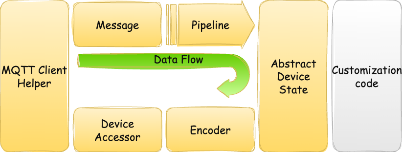
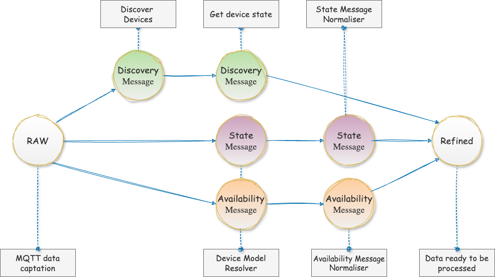

Core Concepts
This section provides an overview of the fundamental concepts and principles that underpin this project. Understanding these concepts will help you to use and contribute to the project more effectively.

MQTT
The MQTT service is essential for establishing a connection to an MQTT broker and handling events such as connect and disconnect. It also allows for the addition of custom handlers for these events. Furthermore, main loop facilities are necessary for the continuous processing of these events. This support is provided by the iot2mqtt.mqtthelper.ClientHelper class.
Messages
MQTT messages are represented by the iot2mqtt.messenger.Message class. This class serves as a container to store various attributes related to the message. These attributes include:
Incoming RAW Data: The raw data received via MQTT.
Device Name: The name of the device issuing the message.
Message Type: The type of message, which can be one of the following:
Discovery: Indicates that a new device has been discovered.
Availability: Indicates the availability status of a device (e.g., online or offline).
State Notification: Provides updates on the state of a device (e.g., on or off).
IoT Protocol: The protocol used by the device, such as Zigbee or TASMOTA.
Device Model: The model of the device.
Refined Data: The data extracted and processed from the raw data.
The data attributes are progressively completed in a processing pipeline and are stored in the Message object. This allows for the customization of behavior based on the message content. Messages can be read from python Queue returned by function call to iot2mqtt.central.get_refined_data_queue().
Example Usage
Below is an example demonstrating how to use the ClientHelper class to connect to an MQTT broker and process messages from the refined data queue.
from iot2mqtt import central, mqtthelper
TARGET = "localhost"
def main():
# Initialize the MQTT client helper with the broker's hostname and security context
_client = mqtthelper.ClientHelper(
mqtthelper.MQTTContext(hostname=TARGET),
mqtthelper.SecurityContext()
)
# Start the MQTT client to establish a connection with the broker
_client.start()
# Get the refined data queue which will contain processed MQTT messages
_refined_queue = central.get_refined_data_queue(_client)
# Get and print the 10 next messages from refined queue
for _ in range(10):
message = _refined_queue.get()
print(f'Received message: {message}')
if __name__ == "__main__":
main()
Processing pipeline

Once the MQTT service is connected, the processing pipeline is started. The pipeline consists of a number of stages, each responsible for a specific task. The stages are as follows:
Message of type Discovery
Discover Devices: This stage involves parsing the raw data to extract the device name, model, and protocol. It identifies new devices that have been discovered in the network.
Trigger Requests to Get Device State: After discovering a device, this stage sends requests to obtain the current state of the device. This ensures that the system has the latest information about the device’s status.
Message of type State or Availability
Resolve the Device Model: This stage determines the specific model of the device based on the information provided in the message. It ensures that the correct model is identified for further processing.
Normalize the Data: This stage involves normalizing the data to a cross-device model and cross-protocol format. It converts the raw data into a standardized format that can be easily used by other components of the system.
Abstract Device State
Refined data are modeled as abstract objects that are both model and protocol agnostic with the help of iot2mqtt.abstract.DeviceState subclasses. These subclasses provide a standardized way to represent the state of various IoT devices, making it easier to process and utilize the data across different components of the system.
They offer a robust layer for the serialization and deserialization of state data, primarily used when communicating with devices via MQTT. This ensures that the state information of various IoT devices can be accurately converted to and from JSON format, facilitating seamless data exchange and interoperability across different device models and protocols.
Explanation
Serialization: The process of converting the state data of a device into a JSON format string. This is essential for sending the state information over MQTT, as JSON is a widely accepted data interchange format.
Deserialization: The process of converting a JSON format string back into a structured state data object. This allows the system to interpret and utilize the state information received from MQTT messages.
By providing a standardized way to serialize and deserialize state data, these classes ensure that the system can handle state information consistently, regardless of the device model or protocol. This is crucial for maintaining interoperability and reliability in an IoT ecosystem where devices from different manufacturers and with different communication protocols need to work together seamlessly.
Subclasses of iot2mqtt.abstract.DeviceState
ADC: Represents the state of an ADC (Analog-to-Digital Converter) device.
AirSensor: Represents the state of an air sensor device, such as temperature, humidity, or air quality sensors.
Alarm: Represents the state of an alarm device, indicating whether the alarm is triggered or not.
Availability: Represents the availability status of a device, indicating whether the device is online or offline.
Button: Represents the state of a button device, capturing button press events.
ButtonValues: Enumeration representing possible button actions, such as single press, double press, or long press.
Motion: Represents the state of a motion sensor device, indicating whether motion is detected or not.
SrtsA01: Represents the state of a specific Zigbee thermostat device, capturing temperature settings and modes.
Switch: Represents the state of a switch device, indicating whether the switch is on or off.
Switch2Channels: Represents the state of a switch device with two channels, allowing control of two separate circuits.
Purpose and Usage
These objects are designed to represent the processed data extracted from the raw MQTT messages. The refined data is stored within the Message object, making it easily accessible for further use. By storing refined data in the Message object, users can customize the behavior of their applications based on the content of the messages. This flexibility is crucial for developing robust IoT solutions that can adapt to various devices and protocols seamlessly.
Example Usage
Below is an example demonstrating how to use the abstract device state classes in your application. This example shows how to create Switch state objects by deserializing state values from different device protocols (Sonoff and TASMOTA).
from iot2mqtt import abstract
# Creating a Switch state object deserializing Sonoff state values.
_SONOFF_VALUES = {"state": "ON"}
abstract_switch1 = abstract.Switch(**_SONOFF_VALUES)
print(f"Sonoff Switch power is: {abstract_switch1.power}")
# Output: Sonoff Switch power is: ON
# Creating a Switch state object deserializing TASMOTA state values.
_TASMOTA_VALUES = {"POWER": "ON"}
abstract_switch2 = abstract.Switch(**_TASMOTA_VALUES)
print(f"Tasmota Switch power is: {abstract_switch2.power}")
# Output: Tasmota Switch power is: ON
Explanation
In this example, we create two instances of the Switch class:
one with a JSON state encoding format for a Sonoff device:
{"state": "ON"}the other with a JSON state encoding format for a Tasmota device
{"POWER": "ON"}
The Switch class is a subclass of the abstract.DeviceState class, which provides a standardized way to represent the state of various IoT devices.
Encoder
An encoder is responsible to serialize abstract data state according to the device model and protocol into JSON format. This is done by the iot2mqtt.encoder.encode() function.
An encoder is required if :
Several devices belong to the same group and share common attributes.
The device is actionable, meaning its state can be modified (e.g., it can be turned on or off).
For example, this is the case for a Switch.
Example Usage
Below is an example of how to encode an abstract Switch state into device-specific states for a Shelly Plug and a Sonoff Smart Plug.
from iot2mqtt import (abstract, encoder, setup)
# Define the abstract state for a Switch
_state = abstract.Switch(power=abstract.POWER_ON)
# Encode the state for a Shelly Plug-in
_shelly_on = encoder.encode(
model=setup.Models.SHELLY_PLUGS,
state=_state,
)
print(_shelly_on)
# Output: {'POWER': 'ON'}
# Encode the state for a Sonoff Smart Plug
_sonoff_on = encoder.encode(
model=setup.Models.SN_SMART_PLUG,
state=_state,
)
print(_sonoff_on)
# Output: {'state': 'ON'}
Explanation
In this example, we create an abstract Switch state object with the power set to POWER_ON. We then encode this state for two different models using the encoder.encode() function.
The resulting JSON state for the Shelly Plug-in is
{'POWER': 'ON'},For the Sonoff Smart Plug, it is
{'state': 'ON'}.
Device Accessor
Access to the device requires to trigger a specific command on the device, such as turning it on or get its state. The command is directly sent to the device over MQTT protocols (like TASMOTA) or via bridges (like Zigbee2MQTT). The device process the command then returns state acknoledge. Class iot2mqtt.dev.DeviceAccessor is responsible for triggering commands to devices upon MQTT.